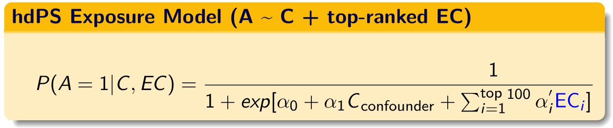
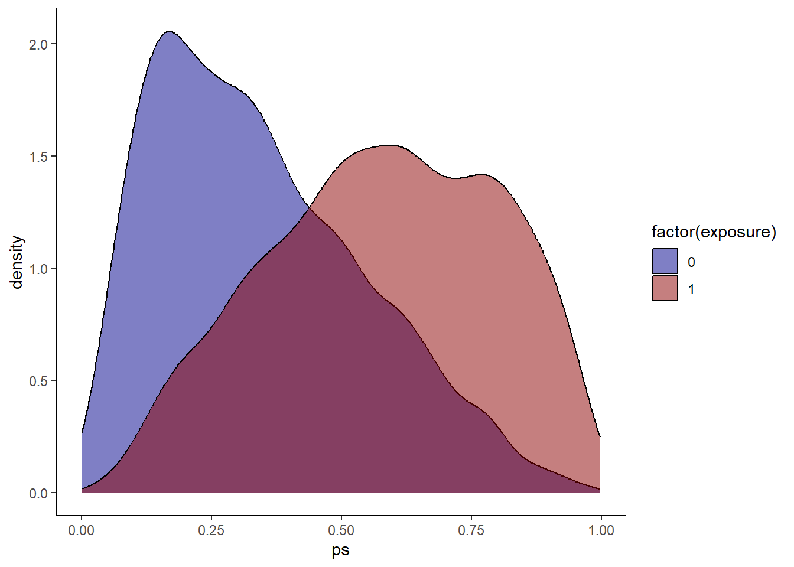
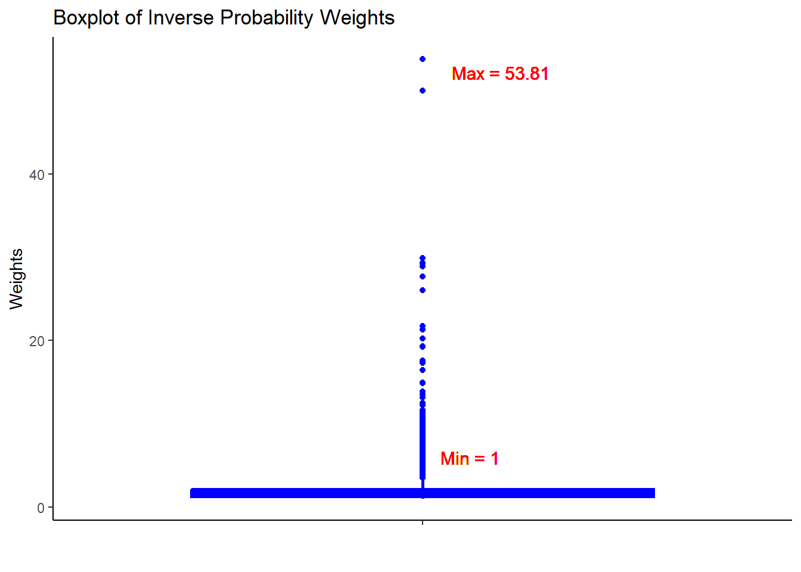
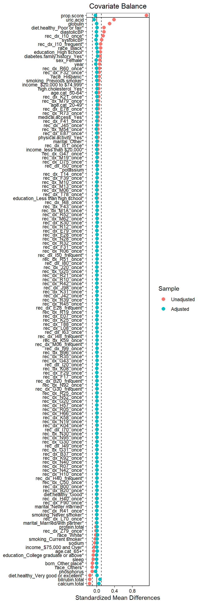

9 Step 6: Propensity
9.1 hdPS model

C = investigator-specified covariates and EC = hdPS covariates (Schneeweiss et al. 2009)
Then the hdPS can be used as matching, weighting, stratifying variables, or as covariates (usually in deciles) in outcome model.
9.1.1 Create propensity score formula
hdps.data$exposure <- as.numeric(I(hdps.data$obese=='Yes'))
hdps.data$outcome <- as.numeric(I(hdps.data$diabetes=='Yes'))
proxy.list.sel <- names(out3$autoselected_covariate_df[,-1])
proxyform <- paste0(proxy.list.sel, collapse = "+")
covform <- paste0(investigator.specified.covariates, collapse = "+")rhsformula <- paste0(c(covform, proxyform), collapse = "+")
ps.formula <- as.formula(paste0("exposure", "~", rhsformula))
ps.formula
#> exposure ~ age.cat + sex + education + race + marital + income +
#> born + year + diabetes.family.history + medical.access +
#> smoking + diet.healthy + physical.activity + sleep + uric.acid +
#> protein.total + bilirubin.total + phosphorus + sodium + potassium +
#> globulin + calcium.total + systolicBP + diastolicBP + high.cholesterol +
#> rec_dx_I10_once + rec_dx_R73_once + rec_dx_I10_frequent +
#> rec_dx_R60_once + rec_dx_E78_once + rec_dx_M79_once + rec_dx_E87_once +
#> rec_dx_I51_once + rec_dx_I50_once + rec_dx_D75_once + rec_dx_K21_once +
#> rec_dx_Z79_once + rec_dx_N28_once + rec_dx_F41_once + rec_dx_E79_once +
#> rec_dx_M10_once + rec_dx_M1A_once + rec_dx_L70_once + rec_dx_F32_once +
#> rec_dx_I80_once + rec_dx_F90_once + rec_dx_F43_once + rec_dx_I50_frequent +
#> rec_dx_B00_once + rec_dx_R12_once + rec_dx_N19_once + rec_dx_B20_once +
#> rec_dx_E28_frequent + rec_dx_R07_once + rec_dx_M19_once +
#> rec_dx_I48_once + rec_dx_G47_once + rec_dx_T14_once + rec_dx_I70_once +
#> rec_dx_M06_once + rec_dx_N40_once + rec_dx_R51_once + rec_dx_R21_once +
#> rec_dx_J45_once + rec_dx_H40_once + rec_dx_K31_once + rec_dx_I63_once +
#> rec_dx_H10_once + rec_dx_R52_once + rec_dx_R19_once + rec_dx_N95_once +
#> rec_dx_K92_once + rec_dx_J20_once + rec_dx_E28_once + rec_dx_R32_once +
#> rec_dx_M13_once + rec_dx_G30_once + rec_dx_J98_once + rec_dx_N52_once +
#> rec_dx_I49_once + rec_dx_N30_once + rec_dx_N42_once + rec_dx_R39_once +
#> rec_dx_N92_once + rec_dx_B96_once + rec_dx_H40_frequent +
#> rec_dx_M54_once + rec_dx_K59_once + rec_dx_G25_once + rec_dx_F31_once +
#> rec_dx_T78_once + rec_dx_R41_once + rec_dx_G31_once + rec_dx_I99_once +
#> rec_dx_G30_frequent + rec_dx_C50_once + rec_dx_F39_once +
#> rec_dx_R06_once + rec_dx_F17_once + rec_dx_K30_once + rec_dx_R45_once +
#> rec_dx_K25_once + rec_dx_B37_once + rec_dx_L08_once + rec_dx_T88_once +
#> rec_dx_J42_once + rec_dx_R10_once + rec_dx_M06_frequent +
#> rec_dx_G20_once + rec_dx_E07_once + rec_dx_K58_once + rec_dx_R35_once +
#> rec_dx_K04_once + rec_dx_R05_once + rec_dx_K08_once + rec_dx_I20_once +
#> rec_dx_H57_once + rec_dx_R25_once + rec_dx_H66_once + rec_dx_R42_once +
#> rec_dx_B20_frequent + rec_dx_I48_frequent + rec_dx_M62_once +
#> rec_dx_G43_once + rec_dx_F29_onceThis is an overly simplistic scenario where we are adding only the main effects in the non-transformed form.
9.1.2 Fit PS model
require(WeightIt)
W.out <- weightit(ps.formula,
data = hdps.data,
estimand = "ATE",
method = "ps")9.1.3 Obtain PS
hdps.data$ps <- W.out$ps
Always a good idea to check propensity score overlap in both exposure groups
9.1.4 Obtain Weights
hdps.data$w <- W.out$weights
Always a good idea to check the summary statistics of the weights to assess whether there are extreme weights
9.1.5 Assessing balance

Always a good idea to assess balance. Here we are measuring against SMD 0.1. Use love.plot function from the cobalt package. See more descriptions of balanced diagnostics elsewhere for a propensity score context.